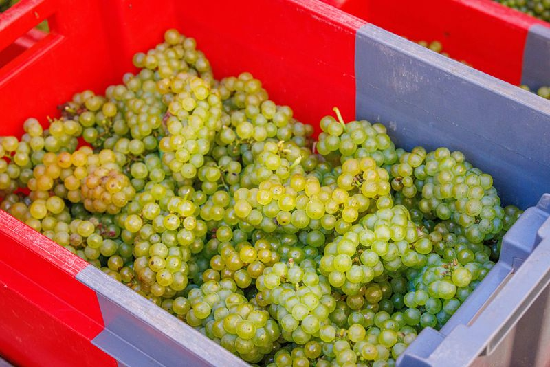
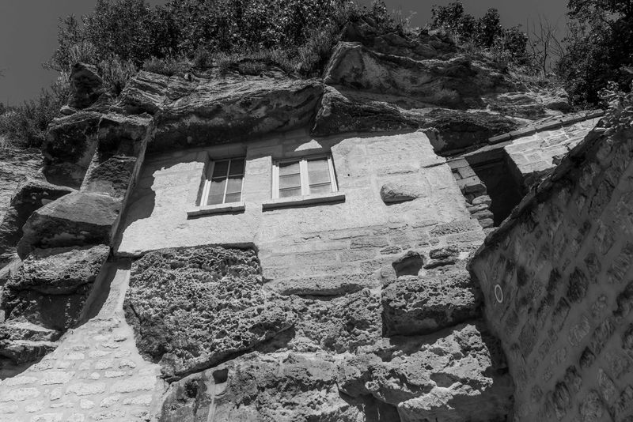

La vigne communale
La vigne communale est exploitée par l’Association des vignerons de Gouvieux depuis 2002.

Présentation des vignes
Situées sur un plateau orienté N-NO/S-SE, les vignes sont plantées sur un sol argilo-calcaire peu profond et un sous-sol de pierre calcaire.
En 2002, 2000 pieds de Chardonnay, cépage délicat d’origine bourguignonne et à la base des vins champenois, sont plantés. Ce cépage produit des vins élégants, avec une belle acidité et une palette aromatique complexe, très dépendante du terroir.
En 2012, 500 pieds de Pinot noir sont ajoutés. Ce cépage rouge fragile produit des vins fins aux arômes subtils de fruits rouges et aux tanins soyeux. Il amène ses arômes et une structure marquée aux vins mousseux.
Les vignes sont conduites en taille Guyot simple et double du fait de la distance inter-ceps. La parcelle est enherbée et tondue entre les rangs et sous les pieds (pas d’utilisation de désherbant). Une pelouse fleurie tout autour de la parcelle est entretenue par l’association.
Ce sont les vignerons de l’association qui assurent tous les travaux nécessaires à l’entretien de la parcelle et à la bonne conduite de la vigne, de la taille aux vendanges. La charge en raisin est limitée à 8-10 grappes/cep pour obtenir une plus belle qualité de baies et de grappes.
Les traitements et les apports de fertilisants sont limités au minimum, mais la parcelle étant sujette à certaines maladies (mildiou et oïdium, par exemple), les traitements annuels sont assurés par l’association, avec des produits et une technique adaptés à la culture biologique.
Climat
Le climat de Gouvieux se rapproche de celui de la grande zone viticole voisine que représente la Champagne. Les phases de développement de la vigne présentent ainsi de nombreuses analogies, ce qui permet de s’appuyer sur les outils de surveillance du végétal et d’alerte aux maladies.
Le climat reste toutefois sensiblement plus océanique, avec une pluviométrie annuelle d’environ 600 mm et des saisons moins marquées (hivers et étés plus doux). Les gelées printanières et les pluies de grêle peuvent occasionner des dégâts, tout comme une pluviométrie trop importante à la floraison.
Historique du vignoble
L’histoire de Gouvieux raconte que, déjà en 1141, un acte royal de Louis VI mentionne l’existence de nombreuses vignes sur le sol de la commune. Un vignoble important se déployait alors dans notre région au Moyen Âge, notamment pour subvenir aux besoins des abbayes. Plus récemment, des cartes attestent encore de la présence de vastes étendues de vignes.
Aujourd’hui, des noms de rues et de lieux-dits en rappellent la mémoire. L’arrivée de nouveaux modes de transport, la crise du phylloxera et de nouveaux choix de cultures ont progressivement fait disparaître ce vignoble, jusqu’aux plus petites parcelles.
En 2002, la ville de Gouvieux a souhaité renouer avec cette belle tradition en initiant la plantation d’une vigne communale et la constitution de l’association Les Vignerons de Gouvieux, afin de la planter, l’entretenir et l’exploiter.
La commune a ainsi mis à disposition de l’association un terrain, une cave à proximité et le matériel nécessaire (pressoir, cuves...). La moitié de la production est destinée à la mairie.
